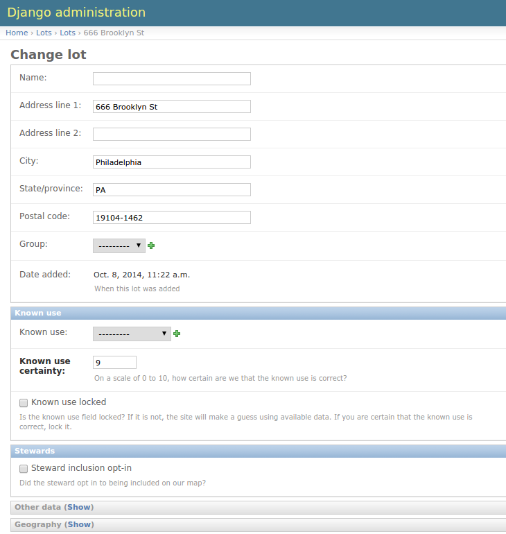

Lots
Living Lots revolves around lots, parcels of land that have been pulled into the Living Lots system. Once a lot exists it should show up on the map and have its own page. People can:
- add content (notes, pictures, and files) to a lot,
- organize a lot,
- groundtruth a lot (make a correction to the use we have recorded for it), and
- steward a lot once they have access to it.
Editing lots
When you edit a lot it should look similar to the following:

Many of these fields are self-explanatory. We'll cover a few here, though.
Known use
These fields all deal with how we think a lot is being used currently, on the ground:
- known use: How is the lot currently being used? If this is empty the lot is assumed to be vacant.
- known use certainty: How sure are we that the known use we have set for the lot is correct? If a lot is marked as having no known use but the certainty is low, it will not be shown publicly.
- known use locked: There are automated bits of
Stewards
-
steward inclusion opt-in: Did the steward that is on the lot opt in to being shown publicly on the map?
There are some cases where a steward would want to mark a lot as being in use but not show their project publicly. When the steward adds their project (through a steward notification), they will check or uncheck a field that says something like Include on map?, and that will check or uncheck this field, respectively.